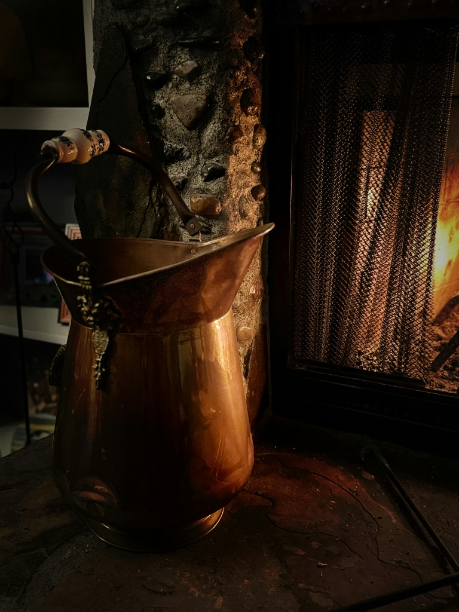

Indus Valley Sanitation
One of the clearest evidences of environmental microbiology is the ancient Indus Valley Civilization (e.g., Mohenjo-Daro, Harappa). Their entire city planning was structurally designed to mitigate waterborne and waste-borne pathogens.
They introduced highly advanced covered drainage systems, private wells, and separated freshwater from wastewater. This proactive infrastructural approach reveals unquestionable insight into how diseases proliferate within an environment.


Water Purification Protocols
The Sushruta Samhita specifies several ways to purify contaminated water, ensuring safety against what we now know are microbial threats. These methods included boiling, exposing water to sunlight (UV sterilization), and filtering through coarse sand or herbs.
Perhaps most importantly, storing water in copper (Tamra jal) or brass pots was universally prescribed. Today, this is scientifically known as the Oligodynamic effect—where metal ions biologically destroy bacterial membranes and viral envelopes.